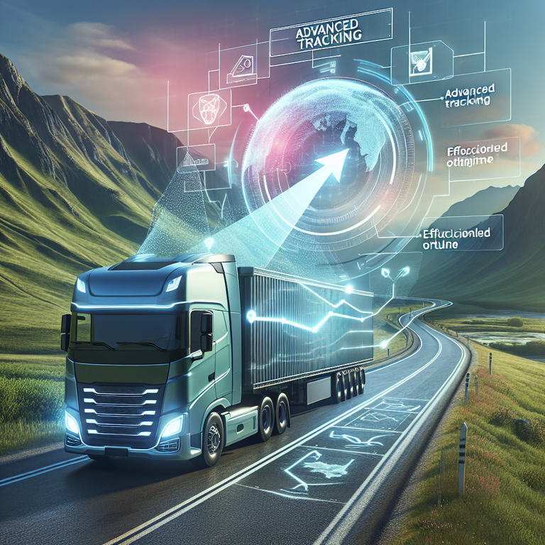

R&R-TRANSLOGIC S.A. se fundó con el firme propósito de satisfacer las crecientes necesidades de transporte de carga pesada a nivel nacional. Desde nuestras oficinas en Ecuador, nos comprometemos a ofrecer servicios de transporte que sean tanto eficientes como innovadores. Nuestra misión es dinamizar y optimizar las operaciones de transporte de carga pesada, asegurando que cada envío se maneje con la máxima profesionalidad y puntualidad. Contamos con un equipo de profesionales altamente capacitados que trabajan en conjunto para brindar soluciones logísticas personalizadas a nuestros clientes. Además, incorporamos las últimas tecnologías en nuestros procesos operativos, lo que nos permite mejorar continuamente la eficiencia y la eficacia de nuestros servicios. En R&R-TRANSLOGIC S.A., creemos que la combinación de talento humano y tecnología avanzada es clave para mantenernos competitivos en el mercado actual. Nuestra visión es ser reconocidos como líderes en el sector del transporte de carga pesada, ofreciendo siempre un servicio de calidad que supere las expectativas de nuestros clientes. Con un enfoque constante en la innovación y la mejora continua, estamos dedicados a contribuir al crecimiento y desarrollo del sector logístico en Ecuador y más allá.
